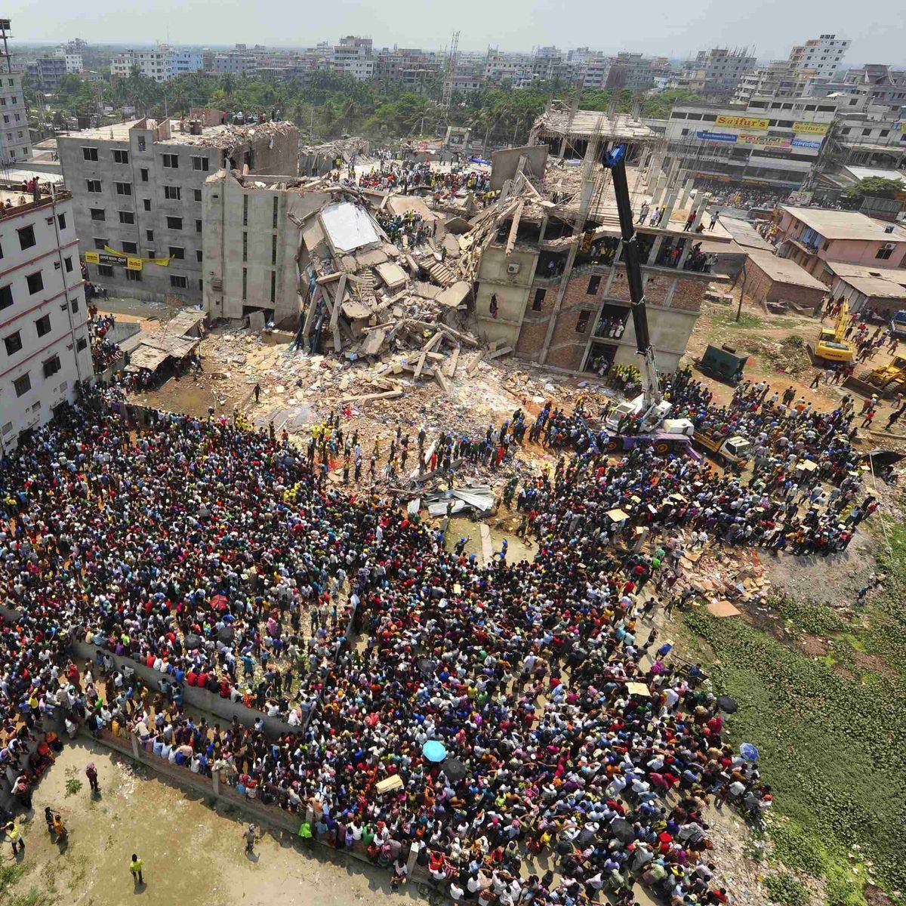

Eine Dokumentation in 6 Kapiteln
Die globale Reise einer Jeans
Von der Baumwollernte bis zu deinem Kleiderschrank
📍 Indien · China · USA · Pakistan · Türkei · Usbekistan · Turkmenistan
Für die Herstellung einer einzigen Jeans werden ca. 800 Gramm Baumwollfaser verwendet. Für den Anbau und die Bewässerung dieser Menge Baumwolle werden durchschnittlich 8.000 Liter Wasser benötigt.
Baumwolle ist durstig und wächst am liebsten dort, wo Wasser ohnehin knapp ist. Ort des Anbaus und Art der Bewässerung entscheiden dabei maßgeblich darüber, wie viel Wasser tatsächlich verbraucht wird. Beispielsweise wird für die Baumwoll-Bewässerung in Indien fast das Vierfache an Wasser benötigt wie in den USA.
Karte wird geladen …
← Regler ziehen, um die Veränderung zu sehen
Der Aralsee war einst das viertgrößte Binnenmeer der Welt, größer als Bayern und Baden-Württemberg zusammen. Ab den 1960er-Jahren wurden seine Zuflüsse systematisch für die Bewässerung riesiger Baumwollplantagen in Usbekistan umgeleitet.
📍 Bangladesh · Pakistan · China
Vier Schritte, vier Länder, ein Gewebe — klicke auf einen Schritt für Details
Anteil an der gesamten Fertigungsenergie von Faser bis fertigem Stoff
📍 Dhaka, Bangladesch
Der fertige Denim-Stoff — blau außen, weiß innen — reist weiter nach Bangladesch. Hier wird aus einer Stoffbahn eine Hose. Das Zusammennähen ist bis heute reine Handarbeit in Fließbandstruktur: Eine Näherin arbeitet den ganzen Tag ausschließlich an Taschen, die nächste ausschließlich an Beinnähten. In den Nähfabriken herrschen oft schlechte Arbeitsbedingungen, die Gebäude sind teilweise marode.

Neue Jeans sollen oft aussehen, als wären sie schon Jahre alt. Bewege die Maus über die drei Punkte und erfahre mehr zu den teilweise riskanten Techniken Chemisches Bleichen, Sandstrahlen und Stonewashing.
📍 Usbekistan → Pakistan → China → Bangladesch → Deutschland
Fertig genäht, verpackt und auf ein Containerschiff verladen: JeansUnstitched hat da schon eine lange Reise hinter sich — von der Baumwollernte in Usbekistan bis ins Regal in Würzburg sind es insgesamt rund 25.800 Kilometer.
Ein beispielhafter, plausibler Weg entlang der größten Produktions- und Handelszentren
Quellen: Quantis (2018), European Commission JRC (2020), Clean Clothes Campaign
📍 Würzburg, Deutschland
Die Gewinnverteilung in der Modeindustrie ist extrem ungleich. Die Menschen, die die Jeans genäht haben, verdienen nur einen Bruchteil des Verkaufspreises.
Aufteilung eines beispielhaften Verkaufspreises von 49,99 €
Von der Erde zurück zur Erde
Anteile am Gesamtwert von 33,4 kg CO₂-Äquivalent — vom Feld bis zur Entsorgung
Quelle: Levi Strauss & Co., "The Life Cycle of a Jean" (2015), ISO-14040/44-konforme Lebenszyklusanalyse der Levi's® 501®.
Die wichtigsten Zahlen der gesamten Reise auf einen Blick
📍 Bei dir zu Hause
Wie wir gesehen haben, tragen auch wir als Nutzer:innen einen großen Teil der Verantwortung für Nachhaltigkeit — nicht nur bei der Kaufentscheidung, sondern auch danach: Waschen und Trocknen allein verursachen mehr CO₂ als die gesamte Produktion einer Jeans zusammen (Kapitel 6). Drei Hebel, mit denen ihr wirklich etwas verändern könnt:
Die 6 wichtigsten Textilsiegel im Vergleich — nach Strenge der Kontrolle